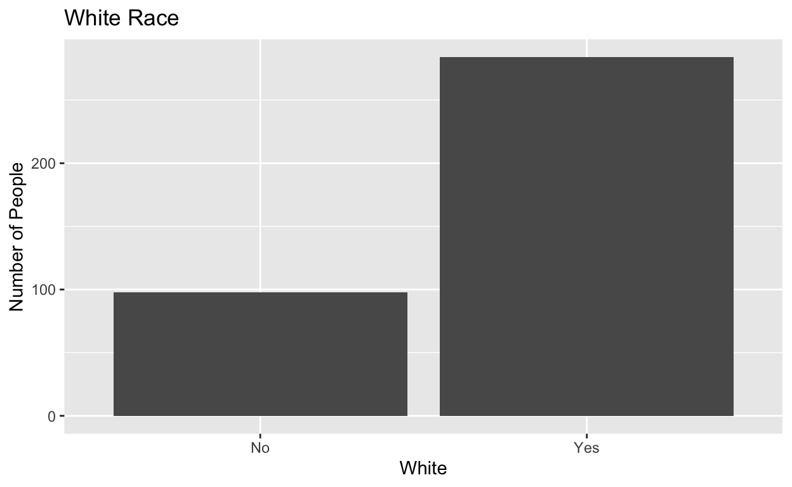
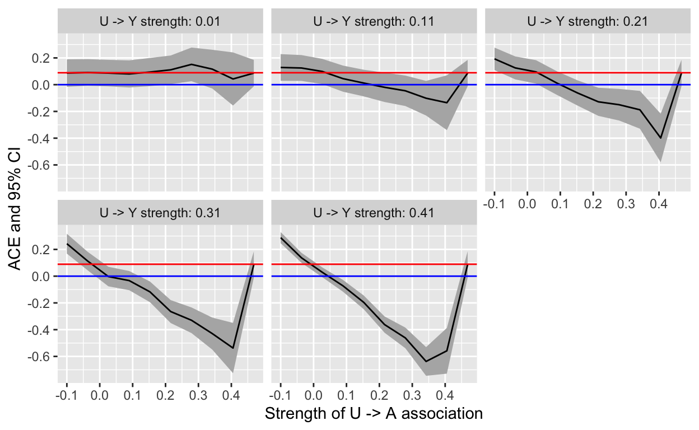
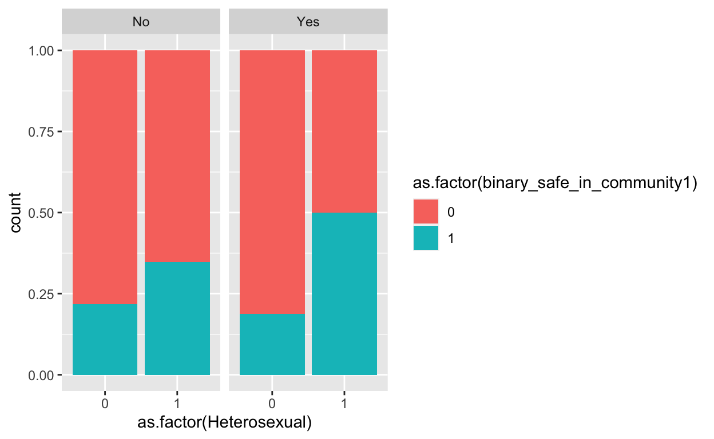

#load required packages
library(foreign)
library(ggplot2)
library(dplyr)
library(pcalg)
#read in data
acha_mac <- read.spss("/Users/colleenminnihan/Documents/causal inference/mac_health_2019.SAV", to.data.frame = TRUE)
#check dimensions of dataset
dim(acha_mac)
[1] 390 368#Causal DAG 
#clean data
acha_mac_clean <- acha_mac %>%
select(RNQ47C, RNQ48, NQ7D, NQ7B, NQ56, NQ54A, NQ32, NQ31A2, RNQ47B) %>%
filter(!is.na(RNQ47C)) %>%
filter(!is.na(RNQ48)) %>%
filter(!is.na(NQ7D)) %>%
filter(!is.na(NQ7B)) %>%
filter(!is.na(NQ56)) %>%
filter(!is.na(NQ54A)) %>%
filter(!is.na(NQ32)) %>%
filter(!is.na(NQ31A2)) %>%
rename('Sexual_orientation' = RNQ48, 'Gender_identity' = RNQ47C,'safe_in_community_nighttime' = NQ7D, 'safe_on_campus_nighttime' = NQ7B, 'relationship_status' = NQ56, 'White' = NQ54A, 'Depression_diagnosis' = NQ32, 'Anxiety_diagnosis' = NQ31A2, 'Trans' = RNQ47B) %>%
mutate(Heterosexual = ifelse(Sexual_orientation == 'Straight/Heterosexual', 1, 0), White = ifelse(White == 'WHITE', 1, 0), Anxiety_diagnosis = ifelse(Anxiety_diagnosis == 'No', 0, 1), Depression_diagnosis = ifelse(Depression_diagnosis == "No",0, 1), binary_safe_in_community1 = ifelse(safe_in_community_nighttime == 'Very safe', 'Yes', 'No'), binary_safe_in_community2 = ifelse(safe_in_community_nighttime == 'Very safe' | safe_in_community_nighttime == 'Somewhat safe', 'Yes', 'No')) %>% #1 = straight, 0 = not straight
mutate(binary_safe_in_community1 = ifelse(binary_safe_in_community1 == "Yes", 1,0)) #1 = white, 0 = nonwhite
#diagnosed w/ depression (did not include in blog post draft)
ggplot(acha_mac_clean, aes(x = as.factor(Depression_diagnosis))) +
geom_bar() +
ggtitle("Previous Depression Diagnosis") +
scale_x_discrete(labels = c("No", "Yes")) +
xlab("Diagnosis") +
ylab("Number of People")
#diagnosed w/ anxiety (did not include in blog post draft)
ggplot(acha_mac_clean, aes(x = as.factor(Anxiety_diagnosis))) +
geom_bar() +
ggtitle("Anxiety Diagnosis or Treatment (past 12 months)") +
scale_x_discrete(labels = c("No", "Yes")) +
xlab("Diagnosis or Treatment") +
ylab("Number of People")
#gender identity (did not include in blog post draft)
ggplot(acha_mac_clean, aes(x = Gender_identity)) +
geom_bar() +
theme(axis.text.x = element_text(angle = 90)) +
ggtitle("What is your Gender Identity?")+
xlab("Identity") +
ylab("Number of People")
#trans (did not include in blog post draft)
ggplot(acha_mac_clean, aes(x = Trans)) +
geom_bar() +
ggtitle("Do you Identify as Transgender?") +
xlab("Transgender") +
ylab("Number of People")
#Sexual orientation
ggplot(acha_mac_clean, aes(x = Sexual_orientation)) +
geom_bar(fill = "mediumpurple") +
ggtitle("What is your Sexual Orientation?") +
xlab("Sexual Orientation") +
ylab("Number of People") +
theme(axis.text.x = element_text(angle = 90))
#sexual orientation binary
ggplot(acha_mac_clean, aes(x = as.factor(Heterosexual))) +
geom_bar(fill = "mediumorchid2") +
ggtitle("Are you Heterosexual?") +
xlab("Heterosexual") +
ylab("Number of People") +
scale_x_discrete(labels = c("No", "Yes"))
#how safe do you feel in the community around campus at night (did not include in blog post draft)
ggplot(acha_mac_clean, aes(x = safe_in_community_nighttime)) +
geom_bar() +
ggtitle("How safe do you feel in the Surrounding Community at Night?") +
xlab("Perceived Safety") +
ylab("Number of People")
#binary safe in community (with yes being only those who said "very safe")
ggplot(acha_mac_clean, aes(x = as.factor(binary_safe_in_community1))) +
geom_bar(fill = "mediumpurple4") +
ggtitle("Perceived Safety in Community Surrounding Campus at Night (Yes/No)") +
xlab("Feel Safe") +
ylab("Number of People") +
scale_x_discrete(labels = c("No", "Yes"))
#white race (did not include in blog post draft)
ggplot(acha_mac_clean, aes(x = as.factor(White))) +
geom_bar() +
ggtitle("White Race") +
xlab("White") +
ylab("Number of People") +
scale_x_discrete(labels = c("No", "Yes"))

set.seed(451)
sensitivity_analysis <- function(.data, model_A, model_Y, assoc_A, assoc_Y) {
n <- nrow(.data) #takes dataset as input, needs models for A and Y, two sensitivity parameters for U to Y and U to A
# Obtain residuals with residuals()
# Obtain residual variances with sigma()
res_A <- residuals(model_A)
res_var_A <- sigma(model_A)^2
res_Y <- residuals(model_Y)
res_var_Y <- sigma(model_Y)^2
# Compute the mean and variance of U given A and Y
mean_U_term1 <- (assoc_A/res_var_A)*res_A
mean_U_term2 <- (((res_var_A - assoc_A^2)*assoc_Y)/(res_var_A*res_var_Y))*res_Y
mean_U <- mean_U_term1 + mean_U_term2
var_U_term1 <- (res_var_A - assoc_A^2)/(res_var_A*res_var_Y)
var_U_term2 <- res_var_Y - assoc_Y^2 + ((assoc_A*assoc_Y)^2)/res_var_A
var_U <- var_U_term1*var_U_term2 #must be positive
# Simulate U and add it to the data
U <- rnorm(n, mean = mean_U, sd = sqrt(var_U))
.data$U <- U
########################################################################
# The part below is the only part you need to change to implement
# the sensitivity analysis in a new context.
# Refit model to estimate the causal effect
updated_model <- lm(binary_safe_in_community1 ~ Heterosexual + White + Depression_diagnosis + Anxiety_diagnosis + Gender_identity + U, data = .data)
# The names of the coefficients and confidence interval output rows
# are called "A" for the treatment variable A.
# This will change in a new dataset.
list(c(
estimate = unname(coefficients(updated_model)["Heterosexual"]),
ci_95_lower = confint(updated_model)["Heterosexual",1],
ci_95_upper = confint(updated_model)["Heterosexual",2]
))
} #so you can contain the three numerical pieces of info together in one thing/case
# Begin the sensitivity analysis
# Fit required models for the sensitivity analysis
mod_A <- lm(Heterosexual ~ Gender_identity, data = acha_mac_clean) #how A depends on the confounders
mod_Y <- lm(binary_safe_in_community1 ~ Heterosexual + Gender_identity, data = acha_mac_clean) #our wrong model that ignored the potential unmeasured confounder
summary(mod_Y)
Call:
lm(formula = binary_safe_in_community1 ~ Heterosexual + Gender_identity,
data = acha_mac_clean)
Residuals:
Min 1Q Median 3Q Max
-0.4910 -0.2595 -0.1703 0.5090 0.8297
Coefficients:
Estimate Std. Error
(Intercept) 0.17026 0.03806
Heterosexual 0.08920 0.04847
Gender_identityMan 0.23150 0.05140
Gender_identityTrans man -0.17026 0.31395
Gender_identityGenderqueer 0.06503 0.11347
Gender_identityAnother identity (please specify) 0.07974 0.22362
t value Pr(>|t|)
(Intercept) 4.473 1.02e-05 ***
Heterosexual 1.840 0.0665 .
Gender_identityMan 4.504 8.92e-06 ***
Gender_identityTrans man -0.542 0.5879
Gender_identityGenderqueer 0.573 0.5669
Gender_identityAnother identity (please specify) 0.357 0.7216
---
Signif. codes: 0 '***' 0.001 '**' 0.01 '*' 0.05 '.' 0.1 ' ' 1
Residual standard error: 0.4407 on 376 degrees of freedom
Multiple R-squared: 0.07256, Adjusted R-squared: 0.06022
F-statistic: 5.883 on 5 and 376 DF, p-value: 2.994e-05# Set up degree of association between U and A and between U and Y
# The U->A associations have some constraints: we set up values
# for the U->A associations that are at most equal to the
# standard deviation of the residuals from the model for A.
U_A_assocs <- seq(from = -0.1, to = sigma(mod_A), length.out = 10)
U_Y_assocs <- seq(from = 0.01, to = sigma(mod_Y), by = 0.1) #look at summary output of mod_Y to determine these values, we want the association to be same sign as A -> Y
# Form all combinations of the U->A and U->Y sensitivity parameters
sens_data <- expand.grid(U_A = U_A_assocs, U_Y = U_Y_assocs)
# Run sensitivity analysis
sens_data <- sens_data %>%
group_by(U_A, U_Y) %>%
mutate(sens = sensitivity_analysis(acha_mac_clean, mod_A, mod_Y, U_A, U_Y))
# Collect sensitivity analysis results in a data.frame
sens_data <- bind_cols(sens_data[,1:2], bind_rows(sens_data$sens))
# Plot results
prepender <- function(string, prefix = "U -> Y strength:") paste(prefix, string)
ggplot(sens_data, aes(x = U_A, y = estimate)) +
geom_ribbon(aes(ymin = ci_95_lower, ymax = ci_95_upper), fill = "grey70") +
geom_line() +
geom_hline(aes(yintercept = coefficients(mod_Y)["A"]), color = "blue", lty = "dashed") +
geom_hline(aes(yintercept = 0), color = "blue") +
facet_wrap(~U_Y, labeller = as_labeller(prepender)) +
labs(x = "Strength of U -> A association", y = "ACE and 95% CI") +
geom_hline(aes(yintercept = 0.08920), color = "red") #this is the original ACE of the model that doesn't account for unmeasured variables

#checking for interaction between gender identity and heterosexual
ggplot(acha_mac_clean, aes(x = as.factor(Heterosexual), fill = as.factor(binary_safe_in_community1))) +
geom_bar(position = "fill") +
facet_grid(~Gender_identity) +
labs(fill = "Feels Safe") +
xlab("Heterosexual") +
ylab("Probability") +
ggtitle("Gender Identity and Heterosexuality Interaction Term Plot")
#checking for interaction between trans identity and heterosexuality (did not include in blog post draft)
ggplot(acha_mac_clean, aes(x = as.factor(Heterosexual), fill = as.factor(binary_safe_in_community1))) +
geom_bar(position = "fill") +
facet_grid(~Trans)

#linear model
safetyACEoverall <- lm(binary_safe_in_community1 ~ Heterosexual + Gender_identity + Anxiety_diagnosis + White, data = acha_mac_clean) #corresponds to sensitivity
summary(safetyACEoverall)
Call:
lm(formula = binary_safe_in_community1 ~ Heterosexual + Gender_identity +
Anxiety_diagnosis + White, data = acha_mac_clean)
Residuals:
Min 1Q Median 3Q Max
-0.5152 -0.2912 -0.2062 0.4848 0.9118
Coefficients:
Estimate Std. Error
(Intercept) 0.14168 0.05867
Heterosexual 0.08502 0.04978
Gender_identityMan 0.22405 0.05169
Gender_identityTrans man -0.20618 0.31497
Gender_identityGenderqueer 0.08271 0.11420
Gender_identityAnother identity (please specify) 0.10282 0.22419
Anxiety_diagnosis -0.05350 0.05265
White 0.06449 0.05269
t value Pr(>|t|)
(Intercept) 2.415 0.0162 *
Heterosexual 1.708 0.0885 .
Gender_identityMan 4.334 1.88e-05 ***
Gender_identityTrans man -0.655 0.5131
Gender_identityGenderqueer 0.724 0.4694
Gender_identityAnother identity (please specify) 0.459 0.6467
Anxiety_diagnosis -1.016 0.3102
White 1.224 0.2217
---
Signif. codes: 0 '***' 0.001 '**' 0.01 '*' 0.05 '.' 0.1 ' ' 1
Residual standard error: 0.4406 on 374 degrees of freedom
Multiple R-squared: 0.078, Adjusted R-squared: 0.06074
F-statistic: 4.52 on 7 and 374 DF, p-value: 7.448e-05#linear model with interaction term
safetyACEsubgroup <- lm(binary_safe_in_community1 ~ Heterosexual + Gender_identity + Anxiety_diagnosis + White + Heterosexual:Gender_identity, data = acha_mac_clean) #corresponds to sensitivity
summary(safetyACEsubgroup)
Call:
lm(formula = binary_safe_in_community1 ~ Heterosexual + Gender_identity +
Anxiety_diagnosis + White + Heterosexual:Gender_identity,
data = acha_mac_clean)
Residuals:
Min 1Q Median 3Q Max
-0.5427 -0.2739 -0.2134 0.4573 0.8924
Coefficients: (3 not defined because of singularities)
Estimate
(Intercept) 0.16745
Heterosexual 0.04598
Gender_identityMan 0.12144
Gender_identityTrans man -0.22793
Gender_identityGenderqueer 0.06385
Gender_identityAnother identity (please specify) 0.08221
Anxiety_diagnosis -0.05980
White 0.06048
Heterosexual:Gender_identityMan 0.14739
Heterosexual:Gender_identityTrans man NA
Heterosexual:Gender_identityGenderqueer NA
Heterosexual:Gender_identityAnother identity (please specify) NA
Std. Error
(Intercept) 0.06180
Heterosexual 0.05792
Gender_identityMan 0.09356
Gender_identityTrans man 0.31509
Gender_identityGenderqueer 0.11498
Gender_identityAnother identity (please specify) 0.22451
Anxiety_diagnosis 0.05282
White 0.05273
Heterosexual:Gender_identityMan 0.11207
Heterosexual:Gender_identityTrans man NA
Heterosexual:Gender_identityGenderqueer NA
Heterosexual:Gender_identityAnother identity (please specify) NA
t value
(Intercept) 2.710
Heterosexual 0.794
Gender_identityMan 1.298
Gender_identityTrans man -0.723
Gender_identityGenderqueer 0.555
Gender_identityAnother identity (please specify) 0.366
Anxiety_diagnosis -1.132
White 1.147
Heterosexual:Gender_identityMan 1.315
Heterosexual:Gender_identityTrans man NA
Heterosexual:Gender_identityGenderqueer NA
Heterosexual:Gender_identityAnother identity (please specify) NA
Pr(>|t|)
(Intercept) 0.00705
Heterosexual 0.42781
Gender_identityMan 0.19512
Gender_identityTrans man 0.46991
Gender_identityGenderqueer 0.57902
Gender_identityAnother identity (please specify) 0.71443
Anxiety_diagnosis 0.25829
White 0.25209
Heterosexual:Gender_identityMan 0.18926
Heterosexual:Gender_identityTrans man NA
Heterosexual:Gender_identityGenderqueer NA
Heterosexual:Gender_identityAnother identity (please specify) NA
(Intercept) **
Heterosexual
Gender_identityMan
Gender_identityTrans man
Gender_identityGenderqueer
Gender_identityAnother identity (please specify)
Anxiety_diagnosis
White
Heterosexual:Gender_identityMan
Heterosexual:Gender_identityTrans man
Heterosexual:Gender_identityGenderqueer
Heterosexual:Gender_identityAnother identity (please specify)
---
Signif. codes: 0 '***' 0.001 '**' 0.01 '*' 0.05 '.' 0.1 ' ' 1
Residual standard error: 0.4402 on 373 degrees of freedom
Multiple R-squared: 0.08226, Adjusted R-squared: 0.06257
F-statistic: 4.179 on 8 and 373 DF, p-value: 8.323e-05#generalized linear model (because of the binary response)
safetyACEmod2 <- glm(binary_safe_in_community1 ~ Heterosexual + Gender_identity + Anxiety_diagnosis + White, data = acha_mac_clean, family = "binomial")
summary(safetyACEmod2)
Call:
glm(formula = binary_safe_in_community1 ~ Heterosexual + Gender_identity +
Anxiety_diagnosis + White, family = "binomial", data = acha_mac_clean)
Deviance Residuals:
Min 1Q Median 3Q Max
-1.2288 -0.8224 -0.6748 1.1268 2.0615
Coefficients:
Estimate Std. Error
(Intercept) -1.6972 0.3231
Heterosexual 0.4536 0.2636
Gender_identityMan 1.0305 0.2509
Gender_identityTrans man -13.2022 624.1939
Gender_identityGenderqueer 0.4638 0.6187
Gender_identityAnother identity (please specify) 0.5697 1.1836
Anxiety_diagnosis -0.3005 0.2835
White 0.3333 0.2786
z value Pr(>|z|)
(Intercept) -5.254 1.49e-07 ***
Heterosexual 1.721 0.0853 .
Gender_identityMan 4.108 3.99e-05 ***
Gender_identityTrans man -0.021 0.9831
Gender_identityGenderqueer 0.750 0.4534
Gender_identityAnother identity (please specify) 0.481 0.6303
Anxiety_diagnosis -1.060 0.2891
White 1.196 0.2316
---
Signif. codes: 0 '***' 0.001 '**' 0.01 '*' 0.05 '.' 0.1 ' ' 1
(Dispersion parameter for binomial family taken to be 1)
Null deviance: 460.44 on 381 degrees of freedom
Residual deviance: 430.63 on 374 degrees of freedom
AIC: 446.63
Number of Fisher Scoring iterations: 13#linear model with trans variable instead of gender identity
mod_withtrans <- lm(binary_safe_in_community1 ~ Heterosexual + Trans, data = acha_mac_clean) #corresponds to sensitivity
summary(mod_withtrans)
Call:
lm(formula = binary_safe_in_community1 ~ Heterosexual + Trans,
data = acha_mac_clean)
Residuals:
Min 1Q Median 3Q Max
-0.3489 -0.3489 -0.2164 0.6511 0.7925
Coefficients:
Estimate Std. Error t value Pr(>|t|)
(Intercept) 0.216424 0.036486 5.932 6.76e-09 ***
Heterosexual 0.132496 0.047499 2.789 0.00555 **
TransYes -0.008923 0.111193 -0.080 0.93608
---
Signif. codes: 0 '***' 0.001 '**' 0.01 '*' 0.05 '.' 0.1 ' ' 1
Residual standard error: 0.451 on 379 degrees of freedom
Multiple R-squared: 0.02122, Adjusted R-squared: 0.01605
F-statistic: 4.108 on 2 and 379 DF, p-value: 0.01719